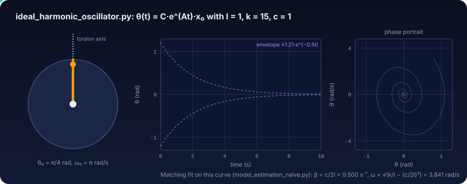
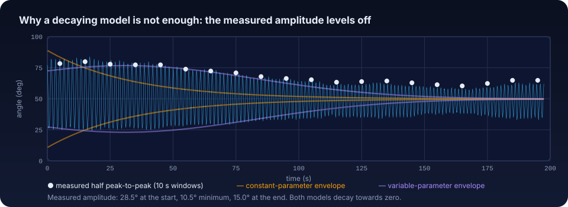

Every widget on this page runs the project's own algorithms (ported line by line to JavaScript and
checked against the Python output) on the project's own data: the 5926 angle samples in
measured_rotation.csv and the fitted parameter files. Follow the five steps in order:
they are the pipeline.

aruco_library.detect_ArUco() → cv2.aruco.detectMarkers(gray, DICT_5X5_50, DetectorParameters())
The detector first converts each frame to grayscale and binarises it with an adaptive mean threshold: a pixel becomes foreground when it is darker than the mean of its \(w\times w\) neighbourhood minus a constant \(C\). OpenCV's default parameters try \(w = 3, 13, 23\) with \(C = 7\). Because the threshold follows the local brightness, the marker's black border survives uneven lighting, which a single global threshold does not. Contours of the binary image are then approximated by polygons, convex quadrilaterals are kept, unwarped and decoded into bits.

aruco_library.py itself on a synthetic frame (regenerate with docs/tools/build_figures.py).aruco_library.Calculate_orientation(): four corners → one integer angle in degrees
From the corners \(tl, tr, br, bl\) the code builds the top-edge midpoint and the centre, flips the image \(y\) axis so that "up" is positive, and takes \(\arctan(\Delta y/\Delta x)\). The arctangent only covers \((-90^\circ, 90^\circ)\); three branches extend it to a full turn. The result is rounded before the branch offset is added, so it is always a whole degree (and 360 can appear instead of 0). An upright marker reads 90°. Drag the marker, tilt the camera, or add corner noise to see what the measurement does.
drag the marker to rotate it
ideal_harmonic_oscillator.py: \(I\ddot\theta + c\,\dot\theta + k\,\theta = 0\), solved as \(\theta(t) = C\,e^{At}x_0\)
With state \(x = [\theta,\ \dot\theta]^T\), \(\alpha = k/I\) and \(\beta = c/I\), the system is
\(\dot x = A x\) with \(A = \begin{bmatrix}0 & 1\\ -\alpha & -\beta\end{bmatrix}\), and the script evaluates the
exact solution with the matrix exponential (scipy.linalg.expm; here a closed-form 2×2 version).
In the under-damped case the same curve is \(A_0 e^{-\frac{c}{2I}t}\cos(\omega_d t + \varphi)\): this is the
form every fitting script uses, so its "\(\beta\)" is \(c/2I\), half of the simulator's \(\beta = c/I\).

model_estimation_naive*.py · model_estimanion_simple.py · model_estimanion_advanced.py
scipy.optimize.curve_fit minimises the sum of squared residuals with the Levenberg–Marquardt
algorithm. It only finds the minimum nearest to its starting point, so the scripts differ mainly in the
model and in the initial guess: the naive one starts from all ones, the other two derive \(p_0\) from the
peaks of the signal (logarithmic decrement for \(\beta\), peak spacing for \(\omega\)). Choose a dataset and a
model, load the script's starting point, and press Run Levenberg–Marquardt to watch the iterations.

Kalman.py: state \([\theta, \dot\theta]\), \(F_k = \begin{bmatrix}1 & \Delta t\\ 0 & 1-\beta(t_k)\Delta t\end{bmatrix}\), \(\sigma_q\) chosen by maximum likelihood
\(R = \sigma_z^2\) comes from the residuals of the advanced model; \(Q = \mathrm{diag}(0, \sigma_q^2)\) is the only
free knob. For each \(\sigma_q\) the filter runs over all 5926 samples and accumulates the Gaussian
log-likelihood of its innovations; the script keeps the best of 50 log-spaced values. Move \(\sigma_q\), click the
likelihood curve, scrub the step inspector, and compare the update written in Kalman.py
(\(\hat x = x^- + K_{0}\,y\), the angle gain applied to both states) with the textbook update
(\(\hat x = x^- + K\,y\)).
